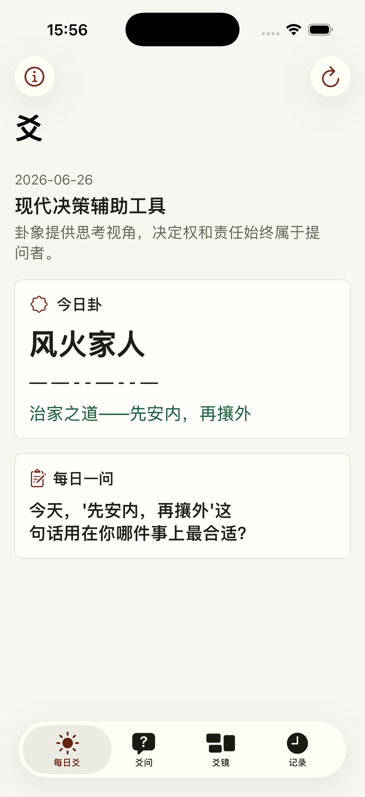
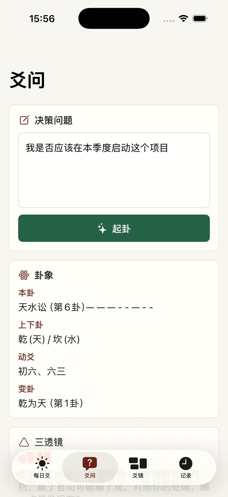
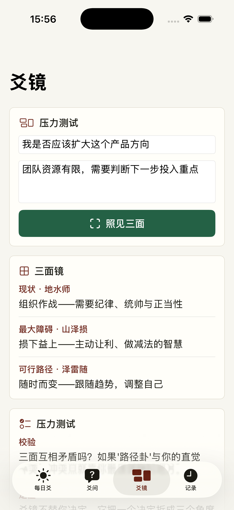
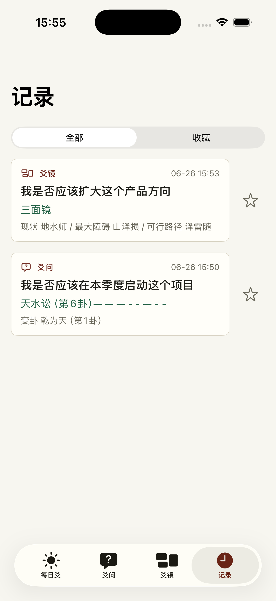
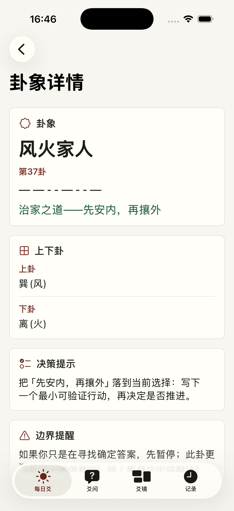
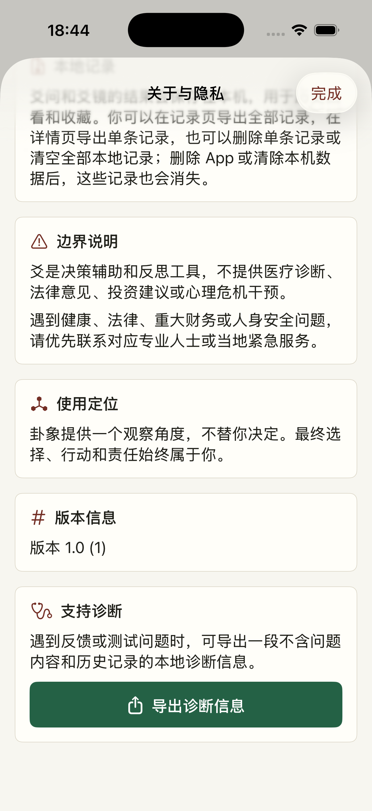

每日爻
每天给出一个卦象和一个反思问题，用作当日观察入口。
离线决策反思工具
用每日爻、爻问和爻镜，把复杂选择拆成几个可观察、可记录、可回看的角度。

每天给出一个卦象和一个反思问题，用作当日观察入口。
输入具体决策问题，获得澄清建议、边界预警和三透镜解读。
把同一个选择拆成现状、最大障碍、可行路径三面镜。
本地保存结果，支持搜索、收藏、详情回看、导出全部或单条记录和删除本地记录。
首次使用和隐私页都会说明离线运行、本地记录和非专业建议边界。





爻当前版本离线运行，不连接服务器，不调用大模型 API，不上传你的问题、背景或记录。卦象提供观察角度，不替你决定；遇到医疗、法律、重大财务或人身安全问题，请优先联系专业人士或当地紧急服务。